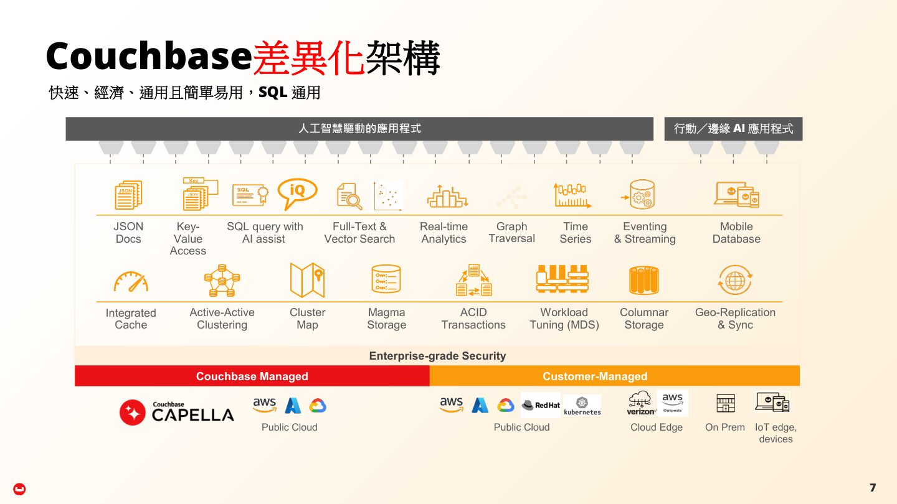
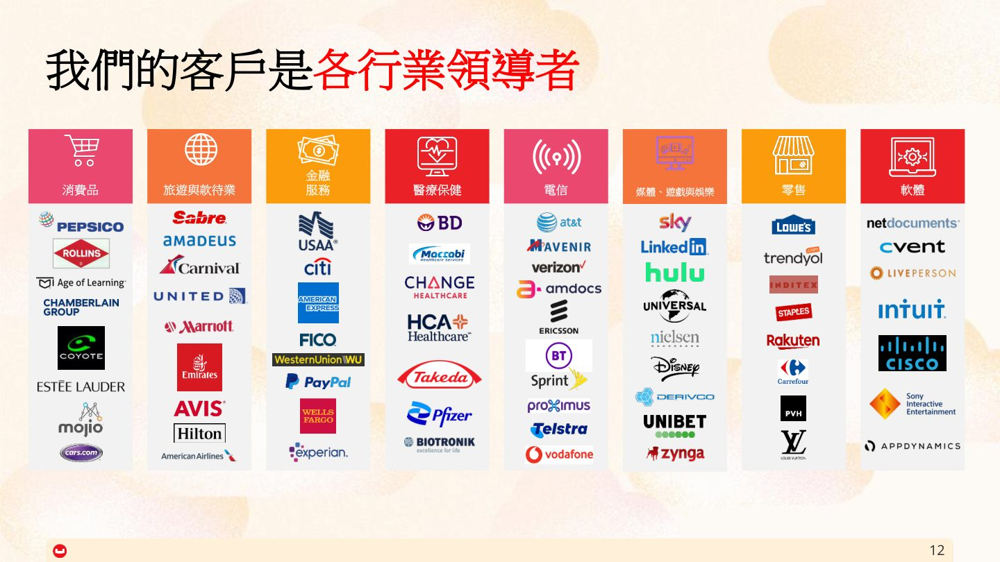
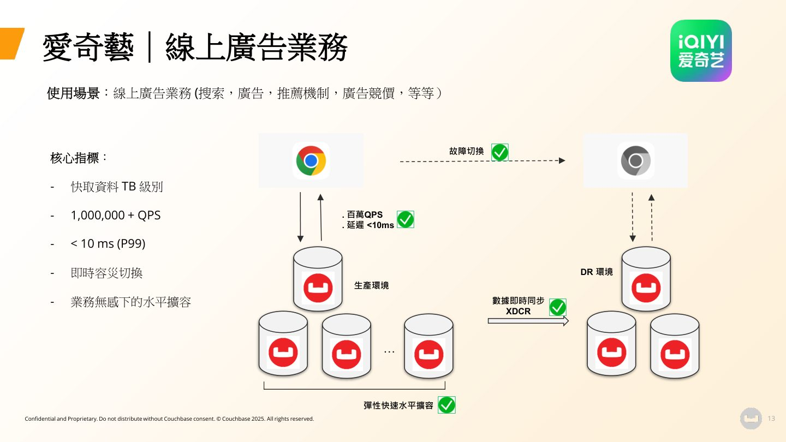
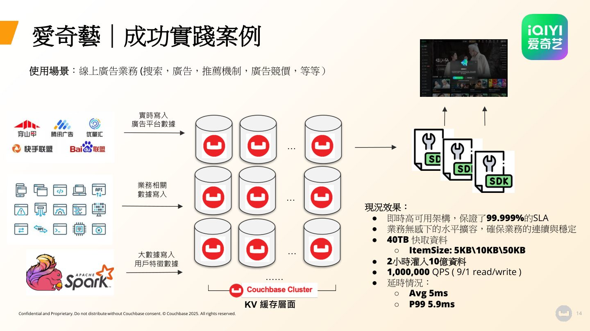

摘要
演講探討在 AI Agent 時代，企業舊有的拼湊式資料庫架構已難以應付即時性、資安與規模化需求，講者以 Couchbase 作為面向 AI 打造的統一資料庫平台為例，說明如何以單一引擎整合交易、分析與向量搜尋，取代分散在傳統資料庫、NoSQL、搜尋引擎與快取之間的技術堆疊。內容並引用愛奇藝與日本樂天集團的實際導入案例，展現在高併發、低延遲場景下的效能與總擁有成本效益。
重點圖片／架構圖




三大力量重塑企業資料需求
講者引用微軟、輝達與 Alphabet 執行長對 AI Agent 時代的觀點，指出客戶期望（即時、個性化、全天候體驗）、企業 AI 轉型與資安風險三股力量正重塑企業對資料庫的要求。舊有架構將資料分散在傳統資料庫、NoSQL 附加元件、搜尋引擎與各自獨立的快取之間，這種拼湊而成的技術堆疊已無法應付當前挑戰，往往犧牲速度、安全性與效率。
Couchbase 的統一資料架構
Couchbase 定位為專為 AI 打造的資料庫平台，訴求以單一引擎取代整個技術堆疊，同時支援 JSON 文件、Key-Value、全文與向量搜尋、即時分析、事件串流與行動資料庫等多種存取模式，並具備 ACID 交易、地理複寫（XDCR）與跨雲部署能力。其 AI Services 架構進一步整合向量化服務、模型服務、非結構化資料服務與 Agent Catalog，可對接 Amazon Bedrock、Vertex AI 與 Azure AI 等外部模型。
效能與總擁有成本表現
演講引用數據指出 53% 的 Couchbase 客戶總擁有成本降低超過 50%，並在尖峰需求下維持 99.999% 可用性與毫秒以下延遲；YCSB 效能基準測試顯示效能領先約 400%，營運成本降低逾 90%，訴求企業無需再為「五百年一遇的洪峰」過度配置資源。
愛奇藝與樂天集團的實際案例
愛奇藝將 Couchbase 用於搜索、廣告、推薦與競價等線上廣告業務，達成 40TB 快取資料、2 小時內灌入 10 億筆資料、單一叢集支援百萬級 QPS，平均延遲 5ms、P99 延遲 5.9ms，系統可用性達 99.999%。日本樂天集團則在電商、廣告投放與電信關鍵業務系統採用 Couchbase 超過六年，透過健康狀況監控與熱備叢集自動切換，保證廣告投放延遲不超過 500ms，並將 Redis 與 Aerospike 上的資料遷移至 Couchbase 以降低維護成本。
企業級 AI 基礎設施的核心 DNA
講者總結 Couchbase 的核心設計理念，包括資料多樣性（JSON 作為 AI 的自然語言）、本地性（透過 XDCR 跨雲、跨資料中心與邊緣複寫）、敏捷性（因應突發工作負載峰值）、高效能（因應 AI 智能體高頻互動）、可擴展性（Scale-out 而非單純升級硬體）、高可用性（無計畫內外停機）以及總擁有成本效率，訴求以這套 DNA 交付面向 AI 的營運資料平台。